산림산업기사 (2008-03-02 기출문제)
1과목: 조림학
1. 서로 길항작용을 하는 토양양분이 아닌 것은?
- 철과 망간
- 칼륨과 붕소, 철
- 칼륨과칼슘, 마그네슘
- 암모니아태 질소와 칼륨
(정답률: 50%)

2. 종자의 활력 검정방법이 아닌 것은?
- 절단법
- X-선법
- 효소 검출법
- 양건법
(정답률: 66%)
3. 일반적인 임목의무육순서로 옳은 것은?
- 가지치기ㅡ 밑깍기ㅡ간벌 ㅡ제벌
- 밑깍기 ㅡ제벌 ㅡ가지치기 ㅡ간벌
- 밑깍기 ㅡ간벌 ㅡ제벌 ㅡ가지치기
- 가지치기 ㅡ 제벌 ㅡ밑깍기 ㅡ간벌
(정답률: 86%)
4. 다음이 설명하는 원소는?
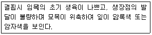
- N
- P
- K
- Mg
(정답률: 58%)
5. 다음중 격년 결실이 가장심한 나무는?
- 리기다 소나무
- 전나무
- 가문비나무
- 일본 잎갈나무
(정답률: 44%)
6. 뿌리의 내피에 발달한 카스페리안대의 역할을 바르게 설명한 것은?
- 뿌리털을 통해 흡수한 물에 녹아있는 무기양료들 중에서 식물체가 필요한 양료만 선택적으로 흡수하게 하는 역할을한다.
- 뿌리털을 통해 흡수한 물이 지나치게 다량 흡수되는 것을 방지하는 역할을 한다.
- 뿌리털을 통해 흡수한 물에 녹아있는 무기양료를 모아서 보관하는 역할을 한다.
- 뿌리털을통해 흡수한 물과 물에녹아있는 무기양료들 중에서 무기양료만 통과시키는 거름종이 역할을 한다.
(정답률: 62%)
7. 하목식재 수종의 구비요건에 대한 설명으로 거리가 먼 것은?
- 내음성이 클 것
- 가지가 적은 수종일 것
- 소목이라도 약간의 이용가치가 있을 것
- 낙엽의 비효가 클 것
(정답률: 63%)
8. 포지에서 양성된 묘목을 산지에 식재할때까자의 과정으로 옳은 것은?
- 굴취ㅡ선묘 ㅡ운반 ㅡ 포장- 가식- 식재
- 굴취- 포장- 선묘- 운반- 가식- 식재
- 굴취 - 선묘 - 포장 - 운반 - 가식 - 식재
- 굴취 - 운반 - 포장 - 선묘 - 가식 - 식재
(정답률: 74%)
9. 접목에 대한 설명으로 틀린 것은?
- 대목과 접수의 형성층을 서로 맞추어야 접목이 잘된다.
- 접수는 휴면상태에 있고 대목은 활동을 시작한 상태에 있는 것이 좋다.
- 대목은 휴면상태에 있고 접수는 활동을시작한 상태에 있는 것이 좋다.
- 접수와 대목의 친화성이 높아야 접목이 잘 된다.
(정답률: 70%)
10. 일반적으로 가지치기를 실행하는 시기로서 가장 적합한 것은?
- 물오르기 시작하는 초봄
- 늦가을부터 초봄사이
- 늦여름부터 초 여름사이
- 낙엽지는 가을
(정답률: 80%)
11. 용기묘의 장점이 아닌 것은?
- 뿌리의 상처를 줄여 산지 활착을 좋게한다.
- 제초작업을 생략할수 있다.
- 생산비용과 운반비용이 낮다.
- 산지 식재후 생장을 촉진시킨다.
(정답률: 75%)
12. 모수작업에 대한 설명으로 옳은 것은?
- 주로 음수의 갱신에 적용된다.
- 모수의 잔존본수는 종자의 생산량 및 비산거리에 따라 가감할수 있다.
- 후계림은 전형적인 이령림이 된다.
- 갱신이 완료된 이후에 잔존모수는 반드시 제거해야 한다.
(정답률: 66%)
13. 다음중 입선법으로 종자를 정선할 수 있는 수종은?
- 소나무
- 가문비나무
- 낙엽송
- 칠엽수
(정답률: 67%)
14. 산림토양의 단면을 Ao층, A층, B층, 그리고 C층으로 구분할 때 유기물층인 Ao층에 속하지 않는 것은?
- 용탈층
- 부식층
- 분해층
- 낙엽층
(정답률: 77%)
15. 다음은 Hawley의 4가지 간벌법이다. 이 중 기계적 간벌을 뜻하는 그림은?


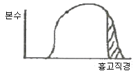
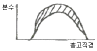
(정답률: 79%)
16. 다음은 전나무 종자 구조이다. 이 중 배축은?
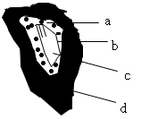
- a
- b
- c
- d
(정답률: 43%)
17. 다음 중 우량묘의 조건이 아닌 것은?
- 우량한 유전성을 지닐 것
- 발육이 완전하고 정아의 발달이 양호할 것
- 측근과 세근의 발당이 많을 것
- 침엽수는 줄기가 곧고 하아지가 발달할 것
(정답률: 70%)
18. 다음 토양의 수분 함수율이 모두 10%일때, 식물이 이용할 수 있는 수분을 가장 많이 함유하고 있는 것은?
- 사질토
- 사질양토
- 양토
- 점질토
(정답률: 31%)
19. 2ha의 임야에 밤나무를 4m 간격으 정방형 식재를 하려면 몆본의 묘목이 필요한가?
- 약 1000본
- 약 1250본
- 약 150본
- 약 200본
(정답률: 82%)
20. 활엽수림에서 주로 땔감을 생산할 목적으로 비교적 짧은 벌기령으로 개벌하고, 그뒤 근주에서 나오는 맹아로서 갱신하는 방법은?
- 왜림작업
- 택벌작업
- 산벌작업
- 모수작업
(정답률: 87%)
2과목: 산림보호학
21. 다음중 병징이 아닌 것은?
- 시들음
- 황화
- 무름
- 균핵
(정답률: 75%)
22. 한지에서 난지로 옮겨진 수종은 다음중 어떤 피해를 받기 쉬운가?
- 조상
- 만상
- 상고
- 동상
(정답률: 59%)
23. 다음중 년간 발생횟수가 가장 많은 해충은?
- 솔나방
- 솔잎혹파리
- 미국흰불나방
- 오리나무잎벌레
(정답률: 80%)
24. 봄철 비가 내린후 향나무 잎사이에 우무(한천)같이 형성되는 녹병 포자는?
- 여름포자
- 녹포자
- 담자포자
- 겨울포자
(정답률: 28%)
25. 해충의 발생량 변동에 대한 설명으로 틀린 것은?
- 밤나무혹벌과 여름철의 진딧물류의 성비는 1:0으로 암컷뿐이다.
- 곤충의 출생율에는 선천적 요인이 주가되나 사망률은 반대로 외적환경 요인이 주가된다.
- 일반적으로 산란수와 암컷의 크기와는 정의 상관관계에 있다.
- 일반적으로 암컷의 최대출산수는 해충의 연령 비율 보다도 출생율 변동에 더 큰영향을 미친다.
(정답률: 40%)
26. 낙엽에서 병균이 월동하지 않는병은?
- 오동나무빗자루병
- 낙엽송 낙엽병
- 포플러 잎녹병
- 소나무 잎떨림병
(정답률: 46%)
27. 다음중 동해를 가장 많이 받는 것은?
- 소나무
- 오리나무
- 밤나무
- 전나무
(정답률: 46%)
28. 기생성 종자식물에 대한 설명중 틀린 것은?
- 겨우살이는 활엽수 및 침엽수에도 기생한다.
- 겨우살이는 엽록체가 있으므로 광합성을 하기도 한다.
- 새삼은 뿌리 및 엽록체가없어 기주식물에 전적으로 의존하며 산다.
- 겨우살이는 낙엽관목이다.
(정답률: 50%)
29. 토양을 산성화시켜 토양전염병의 피해를 크게하는 비료는?
- 용성인비
- 황산암모늄
- 나무재
- 석회질소
(정답률: 76%)
30. 다음병중 병원체가 파이토플러스마인 것은?
- 벚나무 빗자루병
- 대추나무 빗자루병
- 소나무 뿌리혹병
- 아카시나무 모자이크병
(정답률: 79%)
31. 다음중 천막벌레나방의 유령기와 같이 나뭇가지 위에 모여있는 동안에 해충 방제법으로 가장 좋은 것은?
- 땅에 비닐천을 깔고 나무를 턴다.
- 등화유살 한다.
- 먹이로 유살한다.
- 간단한 기구나 손으로 잡아 죽인다.
(정답률: 48%)
32. 매미나방(집시나방)에 대한 설명으로 틀린 것은?
- 침엽수, 활엽수, 벼과식물을 가해하는 잡식성이다.
- 부화유충은 초기에는 군서하지만 자라면 분산하여 가해한다.
- 1년내 1회 발생하고 성충으로 월동한다.
- 수간이나 굵은 가지에 200~500개의 알을 낳는다.
(정답률: 52%)
33. 미국 흰불나방의 월동 형태는?
- 유충
- 번데기
- 성충
- 알
(정답률: 81%)
34. 접촉제에 대한 설명으로 틀린 것은?
- 해충의 입을 통하여 소화기 내에 들어가 중독 작용한다.
- 대부분의 살충제는 접촉제이다.
- 깍지벌레, 진딧물, 멸구류 등의 구제에 이용한다.
- 해충의 신경계통이나 세포조직에 독작용을 일으킨다.
(정답률: 60%)
35. 흰가루병균은 무슨 균류에 속하는가?
- 담자균류
- 자낭균류
- 불완전균류
- 조균류
(정답률: 45%)
36. 수목 뿌리혹병(근두암종병:crown gall)의 병원체는?
- 바이러스(virus)
- 진균(fungus)
- 파이토플라스마
- 세균(bacteria)
(정답률: 77%)
37. 산림해충방제의 임업적 방제방법에 해당되지 않는 것은?
- 산림을 구성하는 수종, 수령구성을 조절한다.
- 2종의 살충제를 번갈아 사용한다
- 임목의 밀도를 조절한다
- 입지조건에 적합한 수종을 심는다
(정답률: 74%)
38. 병환부의 외표에 자실체가 나타날 경우 발병의 원인은?
- 세균
- 바이러스
- 진균류
- 생리적인 장해
(정답률: 66%)
39. 볕데기와 열사 등 고온에 의한 피해가 가장 많이 나타나는 방위는?
- 동남
- 남
- 남서
- 서
(정답률: 80%)
40. 밤바구미와 같은 종실 가해 해충 방제에 효과적인 약제의 사용 방법은?
- 액제 시용
- 입제 살포
- 분제 시용
- 훈증 처리
(정답률: 71%)
3과목: 임업경영학
41. 작업급의 면적을 100㏊, 윤벌기를 25년으로 할 때 법정영계면적은?
- 2㏊
- 4㏊
- 40㏊
- 2.500㏊
(정답률: 75%)
42. 다음 중 성재재적의 설명으로 가장 적당한 것은?
- 근원직경 6cm 이상의 입목재적
- 흉고직경 6cm 이상의 입목재적
- 말구직경 6cm 이상의 입목재적
- 망고직경 6cm 이상의 입목재적
(정답률: 36%)
43. 다음 중 임업노동의 능률을 향상 시킬 수 있는 방법으로 거리가 먼 것은?
- 농촌 노동력의 유출을 막는다.
- 기계ㆍ기구를 개발, 개량하여 보급한다.
- 작업 방법을 개선ㆍ개발한다.
- 작업단을 조직하고 운영한다.
(정답률: 92%)
44. 임목비용가는 어떤 임목의 평가에 주로 사용 되는가?
- 장령림의 임목가
- 노령림의 임목가
- 유령림의 임목가
- 벌기의 임목가
(정답률: 70%)
45. 다음 중 임목비용가의 개념을 표현한 것으로 옳은 것은?
- 조림비+관리비-지대-수입
- 조리비+수입+지대-관리비
- 수입-조림비-지대-관리비
- 조림비+관리비+지대-수입
(정답률: 53%)
46. 산림기본계획에 포함되지 않는 사항은?
- 주요 임산물의 수요공급에 대한 장기전망
- 산림의 합리적 이용과 산림자원의 배양에 관한 사항
- 산림의 공익적 기능증진과 국토보존에 관한 사항
- 지역의 산림현황에 관한 사항
(정답률: 53%)
47. 흉고직경이 50cm, 1cm 내의 나이테수가 2개일 때 이 나무의 재적생장률은? (단, 슈나이더공식으로 구하며, 상수 K는 500으로 한다.)
- 4m3
- 4.5m3
- 5m3
- 5.5m3
(정답률: 58%)
48. 재적 수확의 보속을 실현할 수 있는 내용과 조건을 완전히 구비한 산림은?
- 보호림
- 보안림
- 법정림
- 천연림
(정답률: 70%)
49. 20년생의 현 축적이 200m3, 생장율이 6%일 때 윤벌기는 50년이다. 이때 벌기재적수확은 얼마 인가?
- 360m3
- 320m3
- 520m3
- 560m3
(정답률: 32%)
50. 토지뿐만 아니라 기후요소 등도 포함한 입지의 양부로서 임지의 재적생산능력을 나타내는 용어는?
- 지세
- 지위
- 위치
- 지리
(정답률: 63%)
51. 다음 중 수고 측정기구가 아닌 것은?
- 아브네이레블
- 와이제측고기
- 하가측고기
- 빌티모아스틱
(정답률: 81%)
52. 국립공원의 지정 및 공원계획을 관리하는 부처는?
- 산림청
- 환경부
- 문화관광부
- 교육인적자원부
(정답률: 28%)
53. 감가상각비의 계산 방법 중 자산의 감가가 단순히 시간의 경과에 따라 나타나는 것이 아니라 사용 정도에 비례하여 나타난다는 것을 전제로 하여 계산하는 방법은?
- 작업시간 비례법
- 생산량 비례법
- 연수 합계법
- 정액법
(정답률: 72%)
54. 제지에 해당하는 것은?
- 개간지
- 혼효림지
- 암석지
- 시업지
(정답률: 53%)
55. 일반적으로 침엽수의 조재율은?
- 0.1 ~ 0.2
- 0.3 ~ 0.4
- 0.4 ~ 0.6
- 0.7 ~ 0.9
(정답률: 43%)
56. 자본장비도와 자본효율의 관계를 임업에 도입할 때, 소득을 높이기 위한 임목축적과 생장률의 가장 이상적인 조건은?
- 높은 축적
- 높은 생장률
- 높은 축적과 낮은 생장률
- 적절한 축적과 생장률
(정답률: 82%)
57. 임목자산의 구성 상태로서 양적지표를 나타내는 것은?
- 경영자가 보유하고 있는 전체 삼림면적
- 경영자가 보유하고 있는 인공림의 임령 구성상태
- 경영자가 보유하고 있는 인공림의 기별 구성상태
- 경영자가 보유하고 있는 임목자산의 점유비율
(정답률: 53%)
58. 각산정 표준지법에서 슈피겔 렐라스코프를 사용하여 10개의 표준점에서 측정된 나무의 평균 본수가 10본이었으며, 사용된 흉고단면적 정수는 2m2이었다면. 이 임분의 ㏊당 흉고면적은?
- 10m2/㏊
- 15m2/㏊
- 20m2/㏊
- 알수 없음
(정답률: 85%)
59. 산림의 실정을 조사하고, 현재 생산력을 명백히 하며, 장차 영림구내에서의 시업방법 즉 벌기ㆍ수종의 갱신ㆍ수확의 예정ㆍ벌채순서 등을 결정 하는 자료로 하기 위한 것은?
- 예비조사
- 지황조사
- 임황조사
- 일반조사
(정답률: 32%)
60. 임지기망가(Bu)에 영향을 주는 인자를 잘못 설명한 것은?
- 주벌수익과 간벌수익의 값은 항상 플러스이므로 이 값이 클수록 Bu가 커진다.
- 조림비와 관리비의 값은 마이너스이므로 이 값이 클수로 Bu가 작아진다.
- 이율이 높으면 높을수록 Bu가 커진다.
- 벌기는 보통 높아지면 Bu는 처음에는 그 값이 증대하다가 어느 시기에 가서 최대에 도달하고, 그 후부터는 점차 감소한다.
(정답률: 87%)
4과목: 산림공학
61. 임도의 비탈면이 급경사로 절토 또는 성토할 토량을 감소시키기 위한 공법으로 가장 적합한 것은?
- 돌쌓기 공법
- 벽돌쌓기 공법
- 비탈면 흙막이 공법
- 옹벽 공법
(정답률: 34%)
62. 4 행정기관 사이클의 순서로 옳은 것은?
- 흡입 → 폭발 → 압축 → 배기
- 흡입 → 배기 → 폭발 → 압축
- 흡입 → 압축 → 폭발 → 배기
- 흡입 → 압축 → 배기 → 폭발
(정답률: 78%)
63. 기계화 벌목작업의 특징이 아닌 것은?
- 입목의 크기에 제한을 받지 않는다.
- 생산량이 증대된다.
- 집재 및 가지치기 비용이 절감된다.
- 작업비가 많이 소요된다.
(정답률: 53%)
64. 황폐계천유역 중 토지 이용이 다양해지고 마을이 형성된 경우가 많아 주로 모래막이, 수로내기 등의 공사가 이루어지는곳은?
- 토사생산구역
- 토사유과구역
- 토사퇴적구역
- 토사조절구역
(정답률: 70%)
65. 산림작업조직을 편성하는 경우에 유의하여야 할 사항과 거리가 먼 것은?
- 노동의 안전
- 노동인원의 감축
- 노동 강도의 경감
- 작업기간의 단축
(정답률: 86%)
66. 사방댐에서 일반적으로 방수로의 단면으로 가장 많이 이용되는 형상은?
- 활꼴
- 사다리꼴
- 직사각형
- 정삼각형
(정답률: 89%)
67. 임도시설에서 전폭이 4.0m이고 유효노폭이 3.5m이라면 0.5m 는 무엇을 의미하는가?
- 길어깨
- 측구
- 소단
- 확폭량
(정답률: 72%)
68. 콘크리트의 배합 설계에서 단위 수량이 165kg, 단위 시멘트량이 300kg일때 물시멘트비는?
- 45%
- 48%
- 52%
- 55%
(정답률: 52%)
69. 산림작업의 노동재해원인을 인적요인, 물적요인, 작업환경요인으로 구분할 때, 다음 중 인적요인에 해당하지 않는 것은?
- 과로
- 부주의
- 경험부족
- 보호장비 미착용
(정답률: 69%)
70. 기계톱의 안전장치라고 할 수 없는 것은?
- 스프라켓
- 핸드가드
- 안전드로틀
- 자동체인브레이크
(정답률: 79%)
71. 돌쌓기 방법 중 뒷채움에 콘크리트를 사용하고, 눈에 모르타르를 사용하며, 물빼기 구명을 설치하는 것은?
- 메쌓기
- 찰쌓기
- 막쌓기
- 켜쌓기
(정답률: 77%)
72. 비탈면 안정을 이한 clatlre방지제의 사용효과에 대한 설명으로 틀린 것은?
- 살포되는 종자, 비료, 피복보호제 등의 유실 방지
- 객토의 유출 및 침식 방지
- 토양 수분의 증산 및 표면 건조 유도
- 보온 효과 기대
(정답률: 71%)
73. 임도의 합성물매는 10%로 설정하고, 외쪽물매를 6%로 적용한다면 종단물매는 약 몇 %가 적당 한가?
- 8%
- 10%
- 12%
- 14%
(정답률: 81%)
74. 임도 시공시 교량과 같은 큰 구조물을 시설할 때 하는 기초공사로 얕은 기초와 깊은 기초가 있다. 다음 중 깊은 기초공사가 아닌 것은?
- 나무말뚝 기초
- 독립 기초
- 우물통 기초
- 공기 케이슨 기초
(정답률: 19%)
75. 다음 중 산복사방 식재용 수종으로 요구되는 조건이 아닌 것은?
- 묘목의 생산비가 적게 들고 대량생산이 가능할 것
- 건조ㆍ한해ㆍ충해 등에 대하여 적응성이 클 것
- 갱신이 용이하고 가급적이면 경제가치가 높을 것
- 비료 요구도가 높아 생장이 왕성하고 잘 번식할 것
(정답률: 84%)
76. 예불기의 각 기능별 특성을 잘못 기술한 것은?
- 쵸크 : 엔진을 시동하고자 할 때 또는 기계가 식어 있을 때 사용한다
- 스로틀레버 : 엔진시동과 기계의 정지 때 사용한다.
- 공기필터덮개 : 공기필터를 외부로부터 보호하기 위한 장치이다
- 안전커버 : 톱날을 보호하기 위한 장치이다.
(정답률: 55%)
77. 조림. 육림. 수확 및 보호관리 등 임업경영의 목적으로 시설되는 임도로서 경영임도라고도 불리우는 임도는?
- 간선임도
- 지선임도
- 연결임도
- 도달임도
(정답률: 48%)
78. 야계에서 짧은 붕괴지의 확대를 방지하기 위해 수제공을 설치한 것 중 가장 적합한 것은? (단, 빗금친 부분은 붕괴지이며→는 유수의 방향이다.)
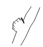
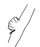
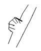
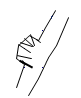
(정답률: 22%)
79. 임도 경사도(%) 표시 방법으로 옳은 것은?
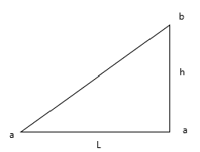
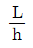
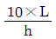
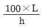
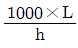
(정답률: 79%)
80. 핸들조작에 곤란을 느끼지 않을 정도로 곡선부를 주행할 수 있게 하기 위해 통과시간 약 4초의 곡선길이를 설치하였다. 설계속도가 30km/hr일때 핸들조작상 필요한 최소 곡선 길이로 가장 적합한 것은?
- 약 23m
- 약 33m
- 약 43m
- 약 53m
(정답률: 57%)